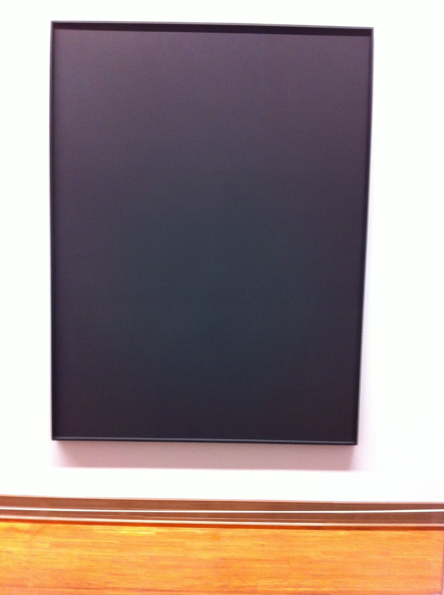
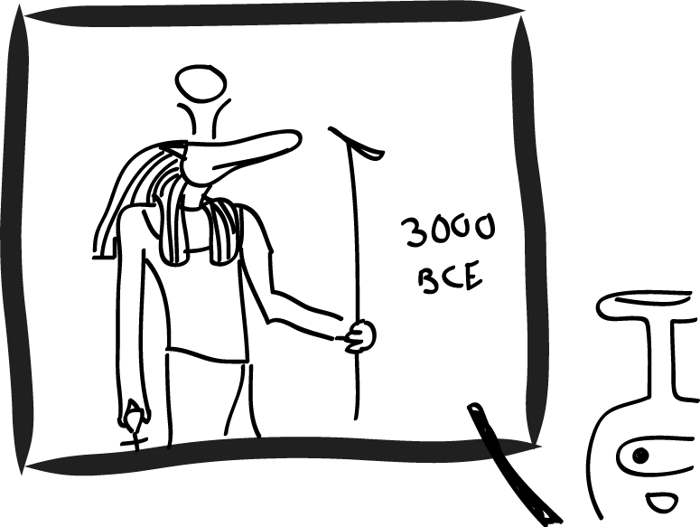

We have seen a lot of art on this trip. (Evan has taken to shouting "Van Gogh!" and then muttering, "The museum is booked in the morning but the lines might be better in the afternoon" in his sleep.) Religious art, gallery art, graffiti art, museum art, performance art, and the list goes on and on.
Sometimes I love it...
Sometimes I don't love it quite so much...
But whether I personally like it or not, I can usually appreciate it. For something, almost anything really. Like... the artist signing their name in a cool color... or being the first person to ever paint with a pinecone... really, I'm quite generous.
But in the temporary exhibit "Albertina Contemporary" housed in the (you guessed it) Albertina Museum in Vienna about (correct, again) contemporary art, I actually came across a painting I was unable to find anything nice to say about.
And here I have to apologize. Drawing the Birth of Venus on a Macbook Air trackpad took 40 minutes, but the following genius in abstract art is just too difficult for me to handle. I must beg your forgiveness and insert the real picture below.

I know. The composition, the colors, the subject, the sheer technicality and beauty of this piece is staggering. Why it has not been snatched up by the Louvre is a complete mystery. Whether it was actually done by the artist's 4 year old niece we will also never know. But the best thing about this piece is the name.
Are you ready?
"Black on Black No. 8"
Yes. Number eight.
As in: this is a series including -at least- seven other paintings.
I had two questions: 1) what do the other seven "black on black" pieces look like (not hard to imagine) and 2) how did the curator decide that number 8 was the magic one?
OK, I'll admit I'm not the nicest to contemporary art (being an impressionist landscape girl myself), but I will give props to the Campbell Soups of the world and give a sad but supportive nod to the person who set up a hay bale in the middle of the MoMA. Still, I think this particular piece takes it a little too far. If a black canvas is going to have absolutely nothing interesting about it, it should at least confuse you with some witty title like "My Imaginary Friend Has Gone Missing" or "A Four Dimensional Study of a Flat Worm in Purple." I actually walked up to the wall and looked for the sign that says "This piece is on loan to ________ Museum." But it was no empty frame... I can only imagine what future archeologists will think when this is the only surviving art of our century.

After seeing these marvelous cartoons, I bet my Mom is so proud she spent so much money on summer art camps...
Right?
Mom?
Hello?